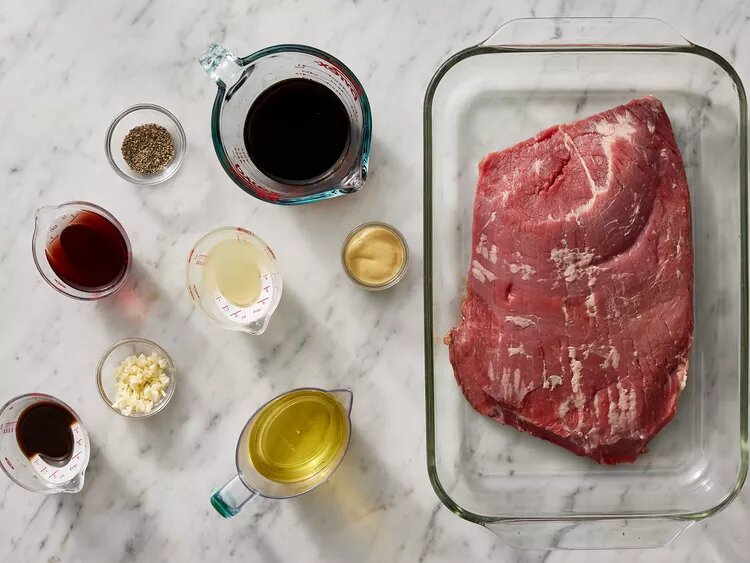
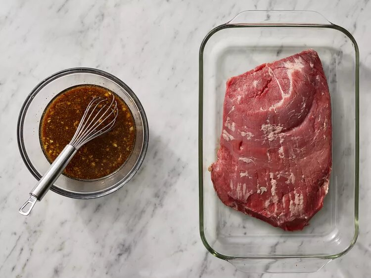
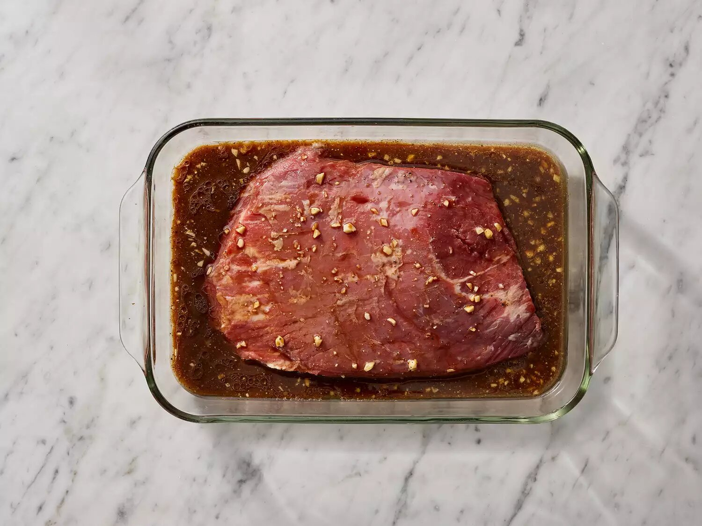
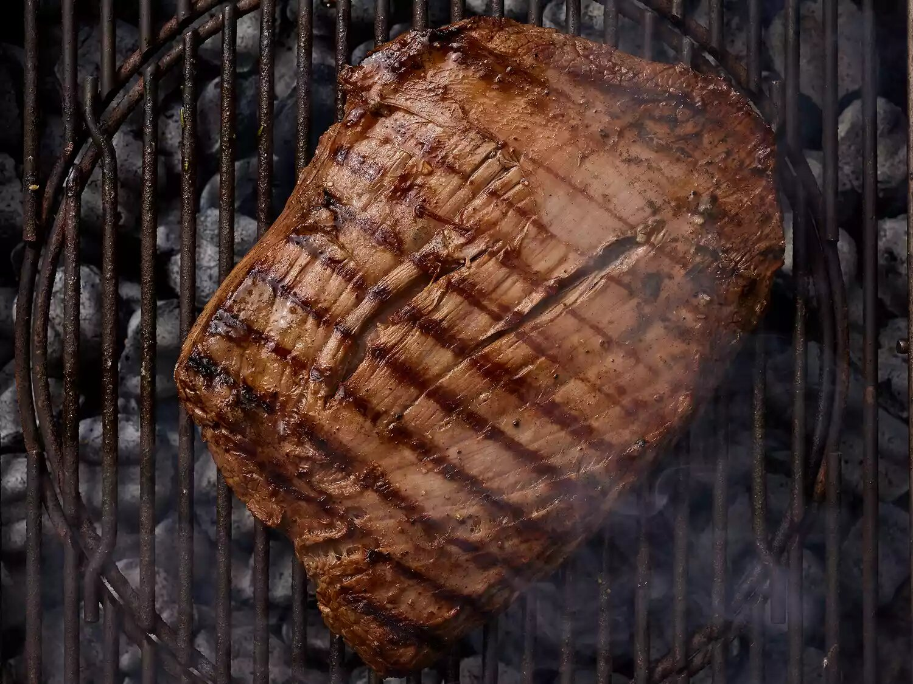
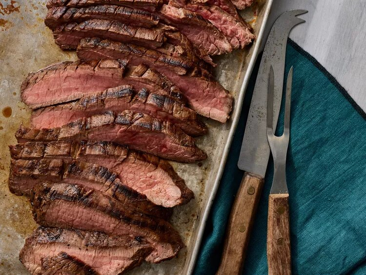

Steak recipe

Description
Make a wonderfli steak with this recipe.
A complex, savory flank steak marinade ensures
perfectly tender and juicy beef every time.
Ingredients
- 1/2 cup vegetable oil
- 1/3 cup low sodium soy sauce
- 1/4 cup red wine vinegar
- 2 tablespoons fresh lemon juice
- 1 1/2 tablespoon Worcestershire sauce
- 1 tablespoon Dijon mustard
- 2 cloves garlic, minced
- 1/2 teaspoon ground black pepper
- 1 (1 1/2) flank steak
steps
-
Whisk together oil, soy sauce, vinegar, lemon juice,
Worcestershire sauce, Dijon mustard, garlic, and pepper for
marinade until thoroughly combined. Place steak in a 9x13-
inch glass baking dish.

-
Pour marinade over flank steak in the baking dish;
turn several times to coat thoroughly with marinade.
Cover, and refrigerate for 2 to 6 hours, or up to 12 hours if you have time.

-
When ready to cook, preheat an outdoor grill for medium-high
heat and lightly oil the grate.

-
Remove steak from the marinade and shake off excess.
Discard the remaining marinade.
-
Cook steak on the preheated grill for about 5 minutes per side,
or to desired doneness.

-
Remove from the grill and let rest for 5 minutes before
slicing and serving.
-
Serve hot and enjoy!
